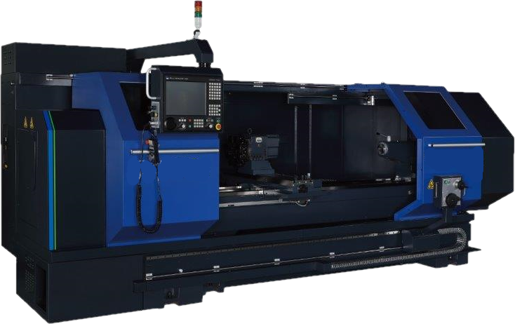

BR SERIES BRIDGE MILLS

BR Series Bridge Mills
The Milltronics BR Series bridge mills are fast machines in between a CNC router and a heavy-duty cast bridge mill. With speeds of up to 1,000 IPM, BR Series mills are built with linear cross roller guides, 24 HP 40 taper BIG-PLUS® inline spindles (either 10,000 or 15,000 RPM), and massive travels. Six different sizes are available up to 200 inches in X-travel by 80 inches in Y-travel. No special foundation is required, making for quick and affordable installation. Popular in high-speed applications such as aluminum, metal fabrications, plastics, wood patterns, and other large parts, the BR Series bridge mills are a faster and more affordable alternative to heavy-duty cast bridge mills.
Bridge Mill
BR6150IL
Our most popular BR Series bridge mill CNC machine at 150″ x 60″ x 28″, the high-speed BR6150IL has a 60″ x 150″ table and a 24 HP dual wound 10,000 RPM #40 taper BIG-PLUS inline spindle. Available with an optional full enclosure and/or a 24 station tool changer.
Explore
Bridge Mill
BR8100IL
The Milltronics BR8100IL is 100″ x 80″ x 28″ with an 80″ x 100″ table. This high-speed bridge machine features a 24 HP dual wound 10,000 RPM #40 taper BIG-PLUS inline spindle. Available with an optional full enclosure and/or a 24 station tool changer.
Explore
Bridge Mill
BR8150IL
With generous travels of 150″ x 80″ x 28″ and an 80″ x 150″ table, this fast bridge mill has a 24 HP dual wound 10,000 RPM #40 taper BIG-PLUS inline spindle. Available with an optional full enclosure and/or a 24 station tool changer.
Explore
Bridge Mill
BR8200IL
Our largest high-speed bridge mill, the BR8200IL offers travels of 200″ x 80″ x 28″ and an 80″ x 200″ table. This high-speed machine features a 24 HP dual wound 10,000 RPM #40 taper BIG-PLUS inline spindle. Available with an optional full enclosure and/or a 24 station tool changer.
Explore
COMBINATION LATHES
Combination Lathes
Milltronics ML Series combo lathes offer both manual and CNC operations for tool rooms and job shops. They can be configured with many options and other features such as bore sizes and bed lengths – including live tooling and C-axis (on most models).
Tool Room Lathe
ML16II/40
The ML16II/40 tool room lathe has 17″ swing and 40″ length with a 2.04″ spindle bore. With an 18 HP, 4,000 RPM spindle it generates 124 ft-lbs of torque. Standard with an 8 station electro-mechanical turret full enclosure and more.
Explore
Tool Room Lathe
ML18/60
With a generous swing of 19,” length of 60″ and a 2.56″ spindle bore, the ML18/60 is our most popular tool room lathe. Featuring a 24 HP, 2,600 RPM spindle it produces 255 ft-lbs. of torque. Standard with an 8 station electro-mechanical turret. Options include chucks and chip conveyor.
ExploreTool Room Lathe
ML22II/60
With a generous swing of 23″, length of 63.5″ and a 3.22″ spindle bore, the ML22II/60 is a popular model. Featuring a 24 HP, 2,600 RPM spindle it produces 1,050 ft-lbs of torque. Standard with an 8 station electro-mechanical turret.
ExploreTool Room Lathe
ML26/40
A popular toolroom lathe size for job shops and customers who re-cut aluminum wheels for automobiles, the ML26/40 has a 27” swing, 40” length and 3.22” spindle bore. Featuring a 24 HP, 2,600 RPM spindle it produces 620 ft-lbs. of torque. Standard with an 8 station electro-mechanical turret. Options include chucks and chip conveyor.
Explore
Tool Room Lathe
ML26/80
The ML 26/80 toolroom lathe features a 27” swing with length of 80” and spindle bore of 4.17” (other bore sizes available). It has a 24 hp spindle motor, 1,600 rpm and achieves 1,250 ft lbs. of torque. Standard with an 8 station electro-mechanical turret. Options include chucks and chip conveyor.
Explore
Tool Room Lathe
ML26/120
Often used for oil pipe and other energy applications, the ML26/120 toolroom lathe has a 27” swing, 6.02” bore and 120” length. The ML26/120 has a 24 hp spindle motor, 1,600 rpm and achieves 1,250 ft lbs. of torque. Standard with an 8 station electro-mechanical turret. Options include chucks and chip conveyor.
Explore
Tool Room Lathe
ML26/160
With 160” length, 27” swing and 6.02” bore, this large toolroom lathe tackles big work. Featuring a 24 hp spindle motor, 1,600 rpm and achieves 1,250 ft lbs. of torque. Standard with an 8 station electro-mechanical turret. Options include chucks and chip conveyor.
Explore